2. L'étude de cas
2.1. Le problème
Revenons à l'application que nous voulons construire. Nous partons d'une application existante à l'architecture suivante :
| 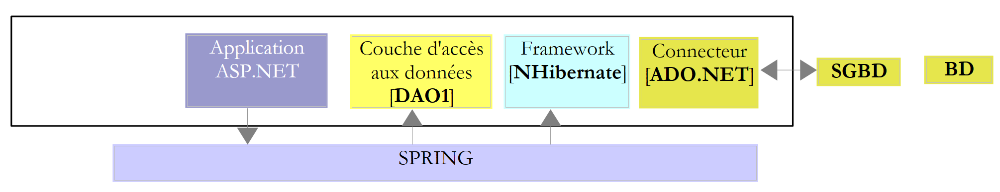 |
Pour ceux qui veulent en savoir plus sur :
- NHibernate : Introduction à l'ORM Nhibernate [http://tahe.developpez.com/dotnet/nhibernate/] ;
- application ASP.NET (WebForms) avec NHibernate et Spring : Construction d'une application web à trois couches avec ASP.NET, Spring.NET et NHibernate [http://tahe.developpez.com/dotnet/pam-aspnet/].
Nous voulons transformer l'application précédente en celle-ci :
| 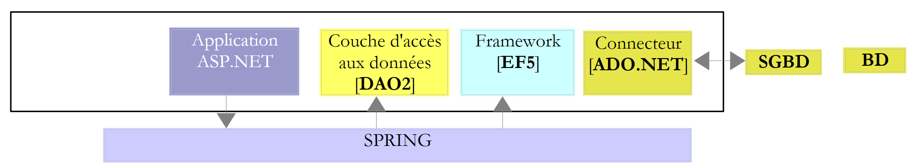 |
où EF5 a remplacé NHibernate. Cette application est un prétexte pour étudier EF5. Parce que Spring.NET nous permet facilement de changer de couche sans tout casser, l'application 2 utilisera la même couche [ASP.NET] que l'application 1. Parce que ce document est consacré à EF5, nous n'expliquerons pas l'écriture de cette couche. Nous l'introduirons dans l'application 2 pour constater que ça marche. Nous expliquerons simplement les changements à opérer dans le fichier de configuration de Spring.NET.
L'étude de cas est la suivante. On souhaite proposer à des médecins un service de prise de rendez-vous fonctionnant sur le principe suivant :
- un service secrétariat assure les prises de RV pour un grand nombre de médecins. Ce service peut être réduit à une unique personne. Le salaire de celle-ci est mutualisé entre tous les médecins utilisant le service de RV ;
- le service secrétariat et tous les médecins sont reliés à Internet ;
- les RV sont enregistrés dans une base de données centralisée, accessible par Internet, par le secrétariat et les médecins ;
- la prise de RV est normalement faite par le secrétariat. Elle peut être faite également par les médecins eux-mêmes. C'est le cas notamment lorsqu'à la fin d'une consultation, le médecin fixe lui-même un nouveau RV à son patient.
L'architecture du service de prise de RV est le suivant :
| 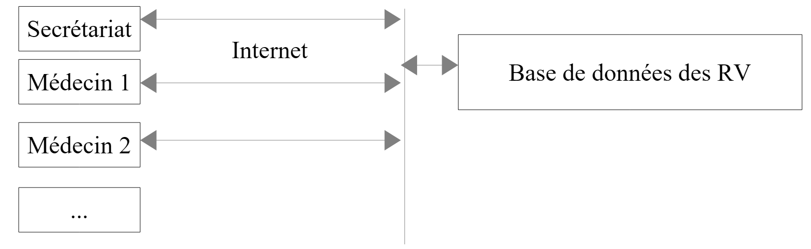 |
Les médecins gagnent en efficacité s'ils n'ont plus à gérer les RV. S'ils sont suffisamment nombreux, leur contribution aux frais de fonctionnement du secrétariat sera faible. Nous appellerons l'application [RdvMedecins]. Nous présentons ci-dessous des copies d'écran de son fonctionnement.
La page d'accueil de l'application est la suivante :
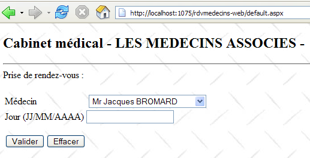
A partir de cette première page, l'utilisateur (Secrétariat, Médecin) va engager un certain nombre d'actions. Nous les présentons ci-dessous. La vue de gauche présente la vue à partir de laquelle l'utilisateur fait une demande, la vue de droite la réponse envoyée par le serveur.
| 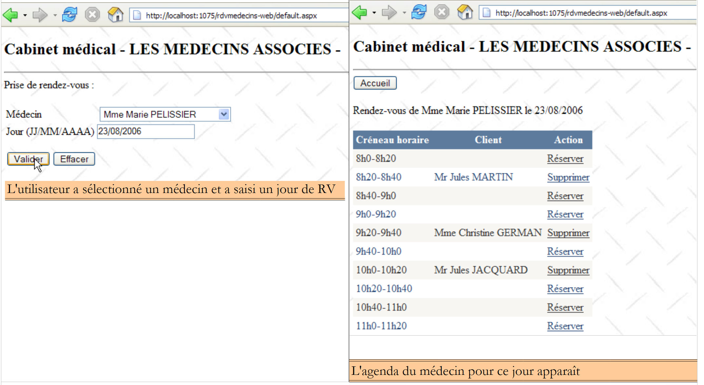 |
| 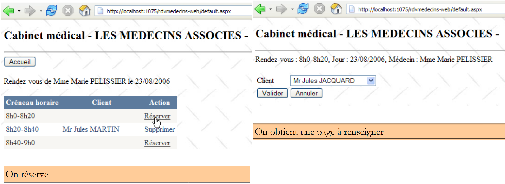 |
| 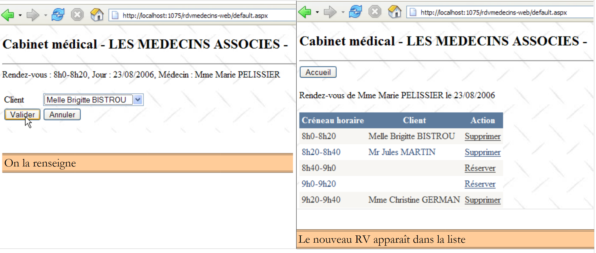 |
| 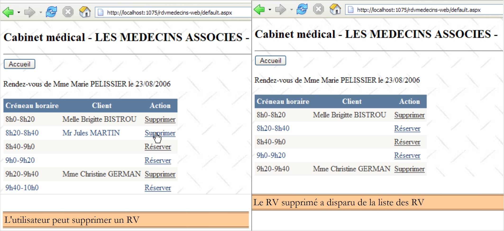 |
| 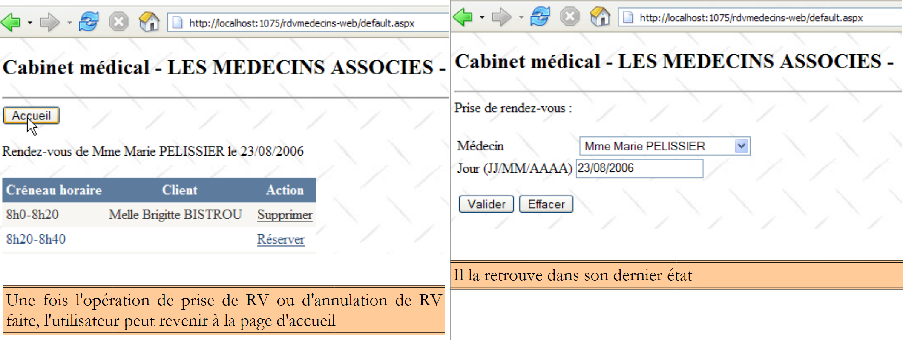 |
2.2. La base de données
La base de données utilisée par l'application NHibernate est une base de données MySQL5 avec quatre tables :
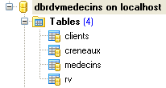
Elle nous servira de référence pour construire toutes nos bases.
2.2.1. La table [MEDECINS]
Elle contient des informations sur les médecins gérés par l'application [RdvMedecins].
 |  |
- ID : n° identifiant le médecin - clé primaire de la table
- VERSION : n° identifiant la version de la ligne dans la table. Ce nombre est incrémenté de 1 à chaque fois qu'une modification est apportée à la ligne.
- NOM : le nom du médecin
- PRENOM : son prénom
- TITRE : son titre (Melle, Mme, Mr)
2.2.2. La table [CLIENTS]
Les clients des différents médecins sont enregistrés dans la table [CLIENTS] :
 |  |
- ID : n° identifiant le client - clé primaire de la table
- VERSION : n° identifiant la version de la ligne dans la table. Ce nombre est incrémenté de 1 à chaque fois qu'une modification est apportée à la ligne.
- NOM : le nom du client
- PRENOM : son prénom
- TITRE : son titre (Melle, Mme, Mr)
2.2.3. La table [CRENEAUX]
Elle liste les créneaux horaires où les RV sont possibles :
 |
| 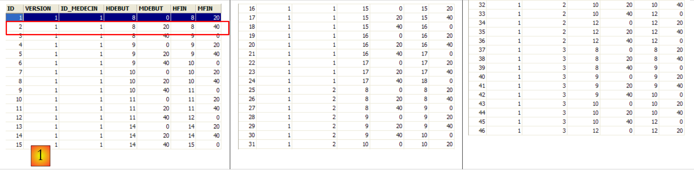 |
- ID : n° identifiant le créneau horaire - clé primaire de la table
- VERSION : n° identifiant la version de la ligne dans la table. Ce nombre est incrémenté de 1 à chaque fois qu'une modification est apportée à la ligne.
- ID_MEDECIN : n° identifiant le médecin auquel appartient ce créneau – clé étrangère sur la colonne MEDECINS(ID).
- HDEBUT : heure début créneau
- MDEBUT : minutes début créneau
- HFIN : heure fin créneau
- MFIN : minutes fin créneau
La seconde ligne de la table [CRENEAUX] (cf [1] ci-dessus) indique, par exemple, que le créneau n° 2 commence à 8 h 20 et se termine à 8 h 40 et appartient au médecin n° 1 (Mme Marie PELISSIER).
2.2.4. La table [RV]
Elle liste les RV pris pour chaque médecin :
| 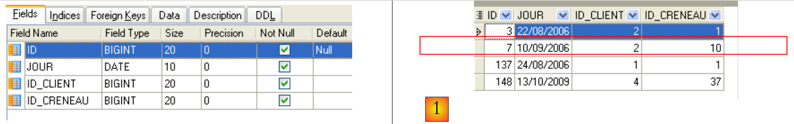 |
- ID : n° identifiant le RV de façon unique – clé primaire
- JOUR : jour du RV
- ID_CRENEAU : créneau horaire du RV - clé étrangère sur la colonne [ID] de la table [CRENEAUX] – fixe à la fois le créneau horaire et le médecin concerné.
- ID_CLIENT : n° du client pour qui est faite la réservation – clé étrangère sur la colonne [ID] de la table [CLIENTS]
Cette table a une contrainte d'unicité sur les valeurs des colonnes jointes (JOUR, ID_CRENEAU) :
Si une ligne de la table[RV] a la valeur (JOUR1, ID_CRENEAU1) pour les colonnes (JOUR, ID_CRENEAU), cette valeur ne peut se retrouver nulle part ailleurs. Sinon, cela signifierait que deux RV ont été pris au même moment pour le même médecin. D'un point de vue programmation Java, le pilote JDBC de la base lance une SQLException lorsque ce cas se produit.
La ligne d'id égal à 7 (cf [1] ci-dessus) signifie qu'un RV a été pris pour le créneau n° 10 et le client n° 2 le 10/09/2006. La table [CRENEAUX] nous apprend que le créneau n° 10 correspond au créneau horaire 11 h - 11 h 20 et appartient au médecin n° 1 (Mme Marie PELISSIER). La table [CLIENTS] nous apprend que le client n° 2 est Mme Christine GERMAN.
Cette étude de cas a fait l'objet d'un article Java [http://tahe.developpez.com/java/primefaces] dans lequel on utilise l'ORM Hibernate pour Java.